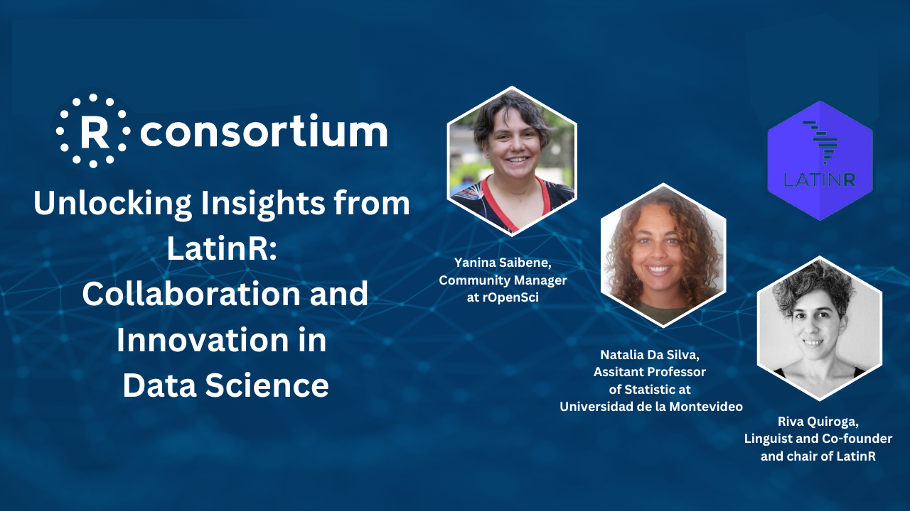
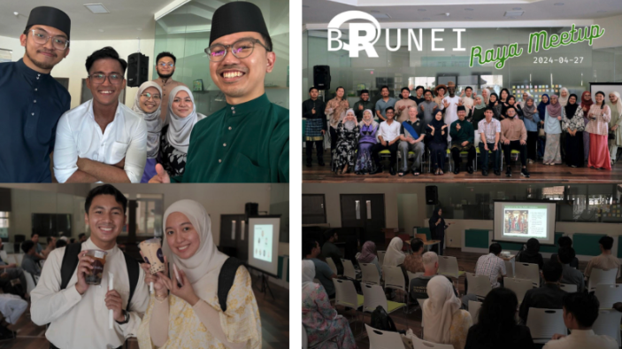
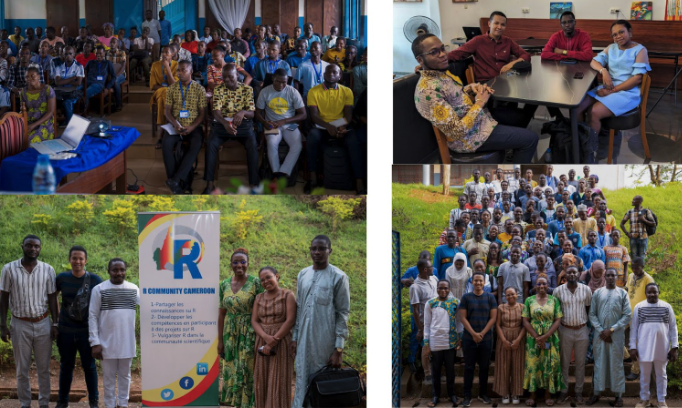
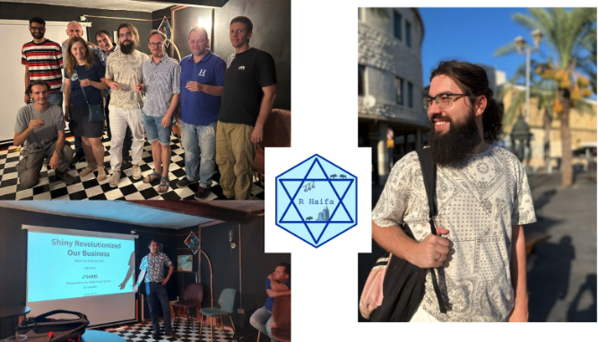
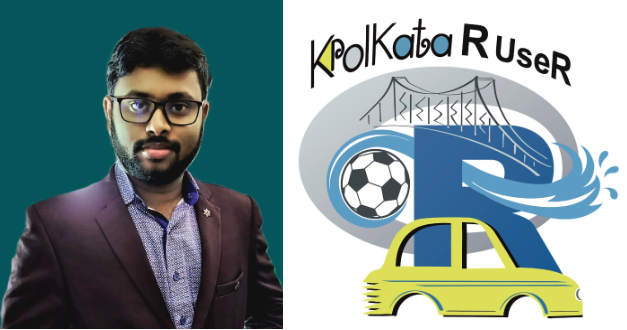
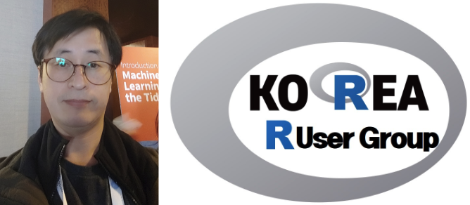
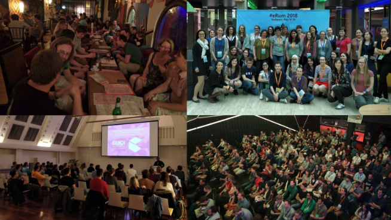

R Consortium Q3 2024 Newsletter
Welcome to the R Consortium’s Q3 2024 Newsletter!
This quarter has been packed with exciting updates, innovative projects, and global community initiatives that are shaping the future of R.
Big news! The R Submissions Working Group successfully completed the “Pilot 3 Submission” which is testing the concept that an R-language based submission package for ADaMs and TLFs can meet the needs and the expectations of the FDA reviewers, including assessing code review and analyzing reproducibility. This is great progress! See the Submissions Working Group section below for more details.
And there’s more! From the appointment of our new Executive Director, Terry Christiani, to the launch of our new Quarto website there’s a lot to dive into!
We’ve also seen impressive progress in our technical working groups, and we continue to support R User Groups across the globe.
Whether you’re interested in the latest package developments, upcoming webinars, or community stories, there’s something here for everyone.
Let’s explore what’s new in the R world!
Main Sections At-a-Glance
New Executive Director
We are excited to announce that Terry Christiani has been appointed as the new Executive Director of the R Consortium! The board of directors affirmed Terry’s selection during our August 2024 board meeting, following a thorough process in which a dedicated selection committee interviewed candidates and provided recommendations. We look forward to Terry’s leadership in guiding the R Consortium’s initiatives and supporting the global R community.
“I have been involved in supporting the R language and its users for many years and am so excited to have the opportunity to work with the R Consortium. The consortium is supporting important work across multiple industries. I hope to ensure that we continue to build on past successes and create more opportunities for R users to deliver valuable insights and analyses for their organizations.”
—Terry Christiani, Executive Director, R Consortium
New R Consortium Quarto Website
The R Consortium has a new website based on Quarto, the open source technical publishing system. Quarto allows easy embedding of R code examples as well as R-based interactive charts. Most of the R community already publishes documents in Quarto, making it easier to accept community contributions for blogs and technical documents.
The URL is the same: www.r-consortium.org. The older site is archived at archive.r-consortium.org.
Building Extended R Packages to Improve R Infrastructure
A major goal of the R Consortium is to strengthen and improve the infrastructure supporting the R ecosystem. We seek to accomplish this by funding projects that will improve the technical infrastructure of R.
There are two open application grant cycles each year. The latest round of the R Consortium’s Call for Proposals officially ended on October 1st, 2024.
We want to extend a huge thank you to everyone who submitted proposals. Each submission plays a pivotal role in strengthening the R ecosystem, and we are thrilled to see such innovative ideas pour in.
As we eagerly anticipate the announcement of the newly funded projects, we reflect on our mission to support and enhance the technical infrastructure behind R. Past initiatives have made significant contributions, including:
- Testing DBI and improving key open-source database backends
- Enhancements to critical packages such as mapview and sf
- Improving R translations to expand accessibility
- Continued infrastructure development for R on Windows and macOS
Stay tuned for the upcoming announcement of the new projects that will continue to drive the evolution of R’s technical foundation!
Some recent projects include:
Unlocking Chemical Volatility: How the volcalc R Package is Streamlining Scientific Research

Enhancing R: The Vision and Impact of Jan Vitek’s MaintainR Initiative


Building Data Highways: Kirill Müller’s Journey in Enhancing R’s Database

Technical Projects and Working Groups
ISC working groups provide the mechanism through which the ISC can explore, fund, and manage large collaborative projects. Working groups are vetted by R Consortium experts and sanctioned by the R Consortium. They become visible to the greater R Community, and in many cases are an excellent vehicle for industry to connect directly to R development.
Here are some updates from our current Working Groups.
Submissions Working Group
Pilot 3 complete!
The R Consortium is pleased to announce the successful completion of the Pilot 3 Submission which extended the work done in Pilots 1 and 2 by generating the ADaM datasets. The complete FDA response letter is available here.
The objective of the R Consortium R Submission Pilot 3 Project is to test the concept that an R-language based submission package for ADaMs and TLFs can meet the needs and the expectations of the FDA reviewers, including assessing code review and analyzing reproducibility. All submission materials and communications from this pilot are publicly available, with the aim of providing a working example for future R-language based FDA submissions. This is an FDA-industry collaboration through the non-profit organization R Consortium.
A pilot 3 overview presentation during the 2024 R/medicine conference is available on YouTube.
Pilot 4 submission on Sept 20
As a next step, the R Consortium R Submission Working Group initiated submission pilot 4, to explore the use of novel technologies such as Linux containers and web assembly to bundle a Shiny application into a self-contained package, facilitating a smoother process of both transferring and executing the application.
Pilot 4 is being cited in a recent Nature paper (paywall).
Census Working Group
The U.S. Census Bureau is the premier source of data about America’s people, places and economy. This makes the Bureau a natural source of information for data analysts. R programmers who start working with Census Data, however, often run into two problems:
- Understanding what data the Census Bureau publishes.
- Understanding what packages on CRAN are available to help with their project.
The Census working group released a second version of their guide “A Guide to Working with Census Data in R.” The guide aims to help R programmers who are confronted with these problems. Check out the full guide here: https://github.com/RConsortium/censusguide.
Key updates include:
- Revamped the section on Data Dissemination to remove reference to the (now deprecated) American Fact Finder and instead point people to the (new) data.census.gov.
- New to working with the Census API? Check out the tutorials and resources linked in the API section to learn more and get started.
- Updated the list of R packages listed in the guide to reflect not just new download stats but also new packages published since the initial version.
- Expanded the list of programs and datasets Census provides, including links to learn more about them.
Our working group welcomes feedback! We are still working on adding tutorials and other package/training related resources to the guide, so readers have more to look forward to with the next update.
Marshaling and Serialization in R
The R Consortium ISC Working Group on Marshaling and Serialization in R started in May 2024. This working group aims at developing standard practices for marshaling and unmarshaling of R objects.
This will involve identifying current problems, raising awareness, and coming up with technical solutions. This may require additions to base R. For example, one solution might be to introduce support for serialize() and unserialize() to call registered hook functions whenever certain types of objects are encountered, which then could marshall and unmarshall those objects.
More information can be found here: https://github.com/RConsortium/marshalling-wg
Multilingual R Documentation
The Multilingual R Documentation working group started in June 2024. There was a virtual meeting to set the stage, and in person meetings during R Dev Day @ PLUS. Its lead presented the project at useR! 2024.
We have a working package and ideas for improvement. There’s a few PRs from collaborators under review and even an example of real world use of the package: a French translation of the torchvision documentation. We have this repository and a channel in the R Consortium Slack that anyone is welcome to join to participate.
R7 Package - Design refining
The Object-Oriented Programming (OOP) working group continues to refine the design and functionality of the package through active discussions within the group and the community at large.
The long-term goal of this project is to merge S7 in to base R. For now, you can experiment by installing it from CRAN:
install.packages("S7")R Validation Hub
The R Validation Hub is a collaboration to support the adoption of R within a biopharmaceutical regulatory setting.
The R Validation Hub enhanced their website this summer to improve navigation. Please take some time to check it out and send feedback: https://www.pharmar.org/
The R Validation solutions for the validation of R packages quantify the “risk” of R packages with several metrics {riskmetric} and provide a user-friendly, full-fledged R Shiny app as a central hub to gauge the “risk” of packages {riskassessment}.
For {riskassessment} the R Validation Hub is announcing the release of two new features:
- Automate “risk decisions” based on {riskmetric} quality assessment values.
- New module called the “Function Explorer” which allows users to explore any function exported from a package in one easy-to-use interface.
Special thanks to Glaxo-Smith Kline (GSK) contributors for donating this code!
For more details about our new features, read our blog post: https://www.pharmar.org/posts/news/updates-aug-2024/
From the R Validation Hub:
“Our roadmap for the app is going scoreless. Most organizations don’t really make actionable decisions from {riskmetric}’s overall package score. It can sometimes deter our attention from the more meaningful quality metrics or even lead to unnecessary confusion or bias. As such, we want Admin users to make the decision whether they want this quantitative metric to be displayed in the app at all. Stay tuned!”
Collecting regulatory package lists
We’ve asked a few pharmaceutical organizations what R Packages have qualified for late stage analysis. We were encouraged by the transparent effort companies like Roche made: https://insightsengineering.github.io/rvalidationhub-packages/
Reg R Repo: first pilot released
The Regulatory R Repository working group released its first pilot this summer, a repository of R packages with pre-calculated risk metrics: https://github.com/pharmaR/pharmapkgs
We are working on a second release with more advanced features: risk metrics calculated on a container image and the generation of a validation report for each R package on the repository.
R Consortium Webinars
The R Consortium hosts a wide variety of free technology and industry webinars from experts who use R to help solve problems in many different industries. A full list of our webinars is available here.
Here are just a few of the most recent R Consortium webinars. (Click on the image to get more details and a full webinar recording.)

Unlocked Insights from LatinR: Collaboration and Innovation in Data Science Webinar

Empowering R User Groups Globally with R Consortium’s Support!
The R Consortium R User Groups (RUGS) Program is the primary vehicle for the R Consortium to award Social Infrastructure Grants. Social Infrastructure includes meetings, events, conferences, and other activities to strengthen the R Community. Find out how you can support your local R User Group here.
Here are a few recent examples of great R User Groups around the world that we support:
Free Boba Tea and Technical R Topics Lure Young Learners to New Brunei R User Group

“Our mission goes beyond just hosting events—we are dedicated to creating and nurturing an inclusive R community and showcasing the power of R in numerous fields.” —Haziq Jamil, the founder and organizer of the Brunei R User Group
Empowering Data Science: How R is Transforming Research in Cameroon

“Our use of R goes beyond basic statistics and plotting; we focus on sophisticated applications like Monte Carlo estimation and advanced R programming.” —NyAvo RATOVO-ANDRIANARISOA, the co-founder of the R Community Cameroon
R-Ladies Rome: Empowering Women in Data Science Through Collaboration and Innovation

“As the lead organizer of R-Ladies Rome, one of the R user groups sponsored by the R Consortium, I am grateful for the support that enables us to organize monthly talks, tutorials, and workshops. Our events provide an inclusive and accessible learning environment free of charge, featuring exciting speakers and various engagement opportunities.” —Federica Gazzelloni, co-organizer of R-Ladies Rome

“Like in many places in Israel, there are hundreds of small startups. What I find interesting is that people come from all sorts of backgrounds—mostly from academia, as usual, but now also from government, traditional companies, and small businesses. I’m excited to see where this leads.” —Eli Eydlin, organizer of the R User Group in Haifa, Israel
Bridging the Digital Divide: Umar Isah Adam on Expanding R Access for Kano, Nigeria Students

“We aim to introduce R to the academic community, and after this, we plan to move on to another college and launch a new program…There has been an increase in the acceptance of R and a growing interest from different people in academia, particularly in R.” —Umar Isah Adam, the founder and organizer of the R User Group Kano, Nigeria
Kolkata R User Group: A Rich History with Statistics

“This is the third city-based R user group in India that is affiliated with the R Consortium. I plan to arrange virtual meetups monthly and in-person meetups annually. I enjoy helping and teaching people from diverse backgrounds, not only in statistics, mathematics, and data science but also in other areas. I want to teach them to use R language to add value to their professional and personal projects.” —Samrit Pramanik of the Kolkata R User Group
Keith Karani Wachira: Leading the Dekut R Community in Kenya and Innovating with R

“I love seeing people learn and apply the concepts and then go on to teach others. One of my students from his first year has now taken over as a lead in our community, which is incredibly encouraging. He even competed in hackathons and finished fourth, showing how much he has grown.”
—Keith Karani Wachira, the Dekut R Community organizer
Full-time Korea R User Group Founder Victor Lee Sees AI Future for R and Quarto Textbooks

“My passion for open source software and faith in the community has driven me to where I am today.” —Victor Lee, organizer of the Korea R User Group
Gergely Daróczi’s Journey: Empowering R Users in Hungary

“…In a university room, it felt like there were only a dozen R users from academia. However, a lot has changed since then, as we now have almost 2,000 members in the local R User group, which exceeded my original expectations for such a small country like Hungary. It has been an interesting and great experience.” —Gergely Daróczi, the founder and organizer of the Budapest Users of R Network.
Get in Touch with the R Consortium!
Follow us on social media or contact us here: https://r-consortium.org/about/contact.html